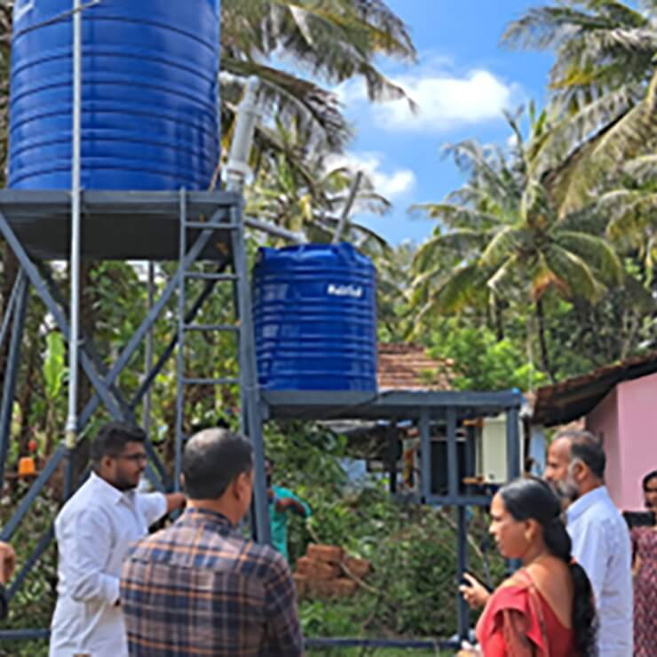
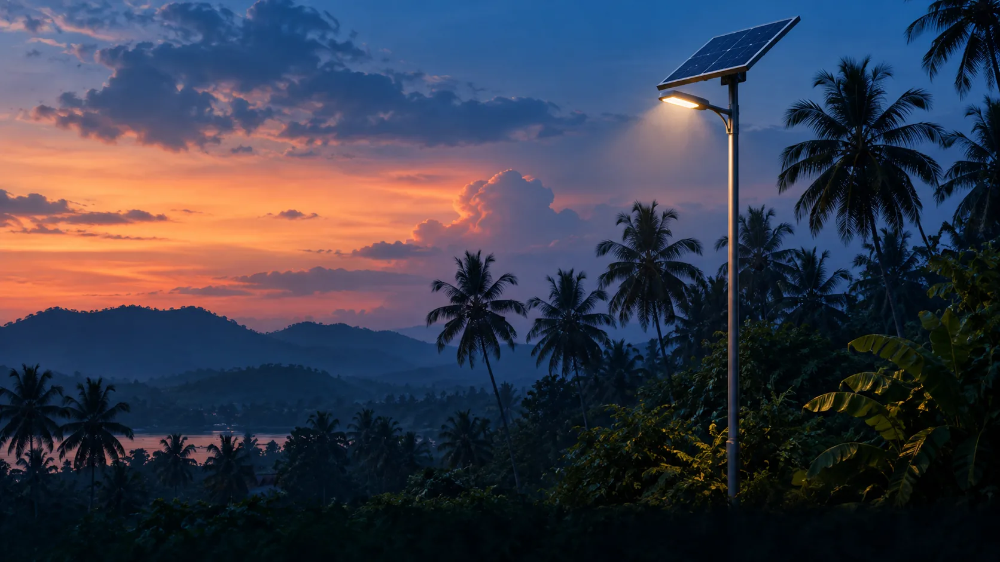

PROJECT ARCHIVE
Practical ideas.
Community roots.
A collection of documented work in water, energy and education. Each story links to its original IEEE publication.

PROJECT PHOTOGRAPHD2Re-B · Baveli, Wayanad
Water that reaches home.
A solar-powered water system developed with the community, combining pumping, storage, drinking water filtration and street lighting.
Read project story →
ILLUSTRATIONLUMEN · Muvattupuzha · 2022
Light after sunset.
LUMEN brought street lighting to a tribal colony in Muvattupuzha. The project was implemented in 2022 with support from EPICS in IEEE.
Read project story → ILLUSTRATION
ILLUSTRATIONSTEAM for Social Good
Learning by making.
An after-school coding camp and makeathon connected young people with design thinking and sustainable development.
Read project story →